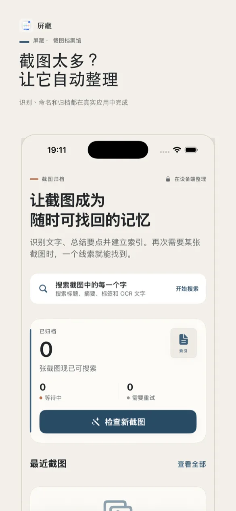
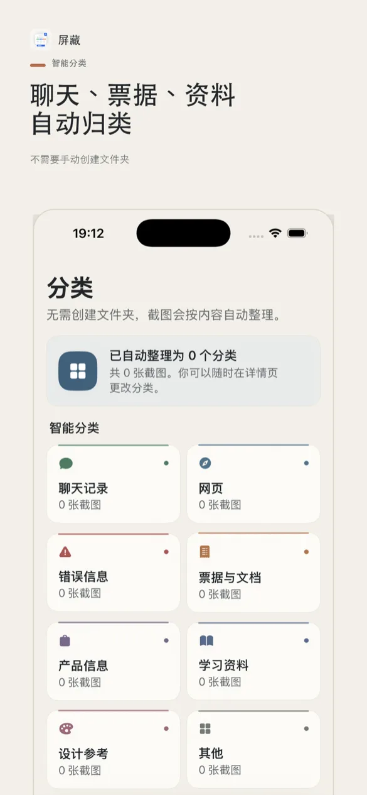
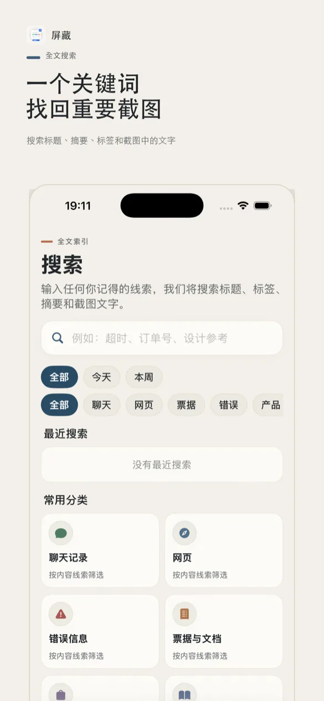
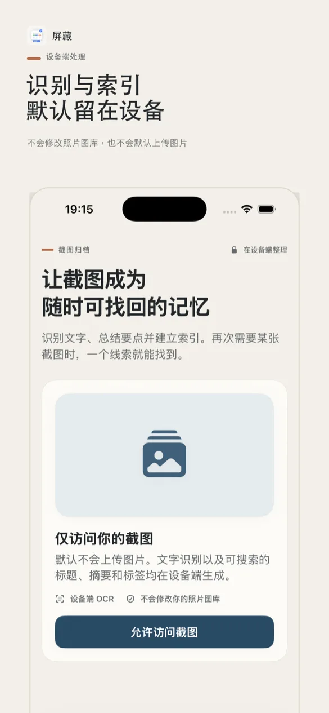
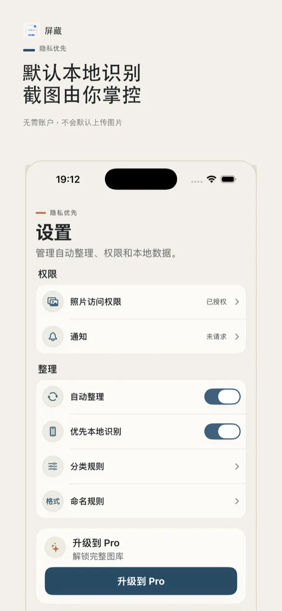
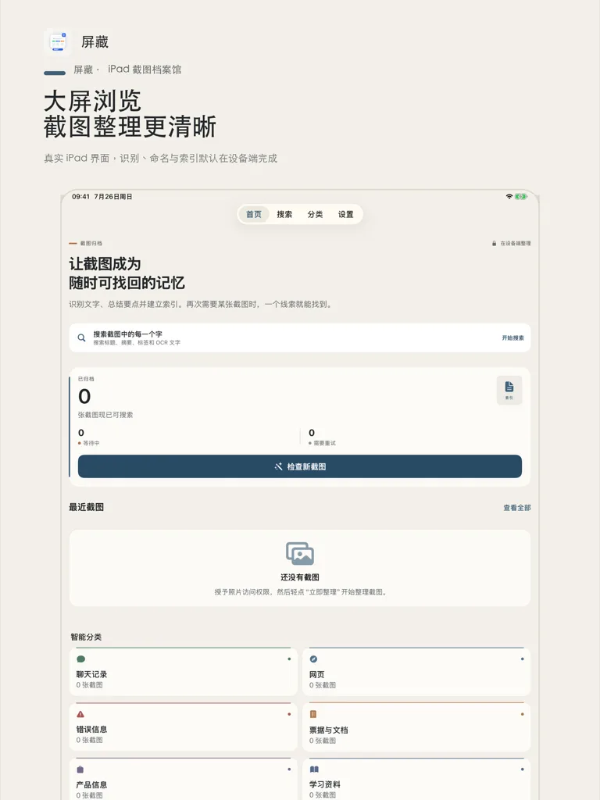
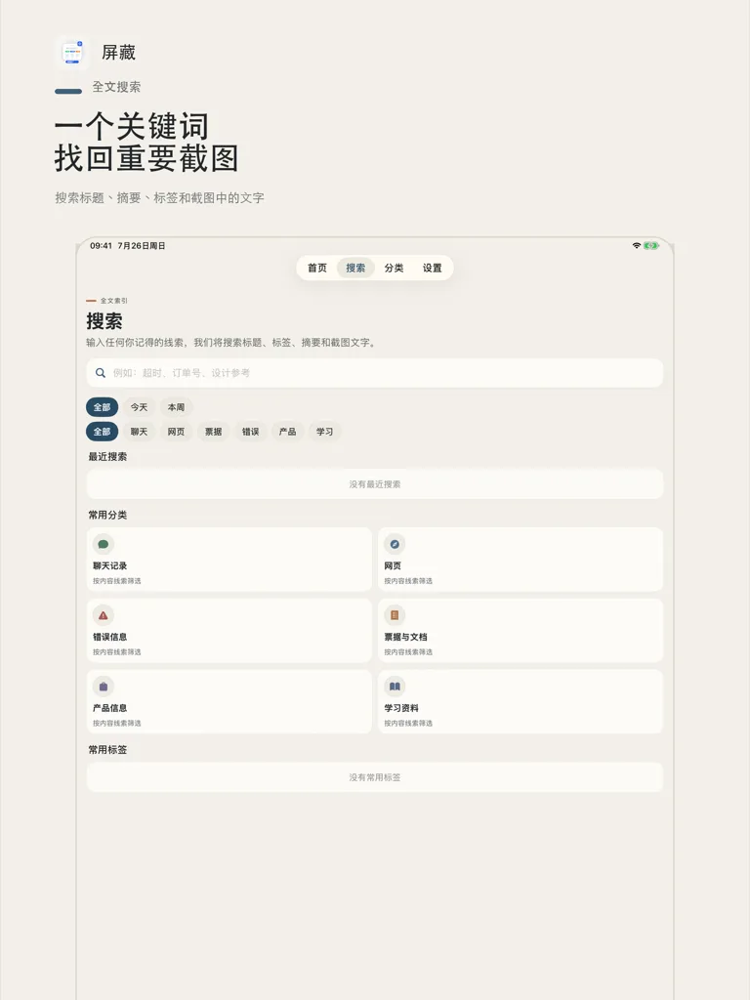
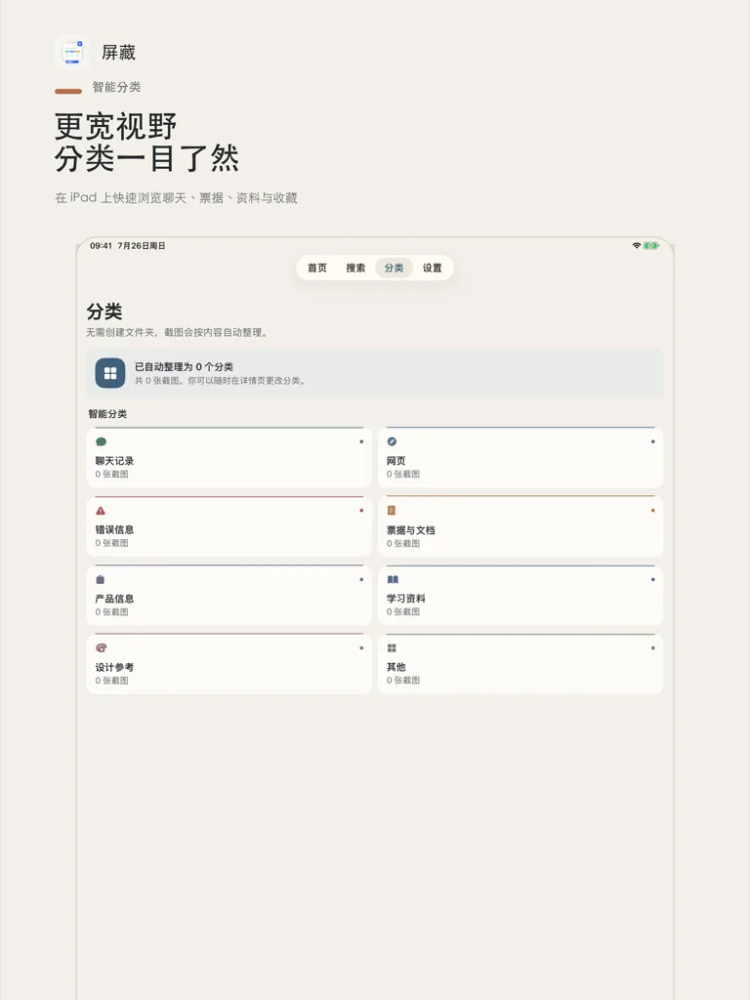
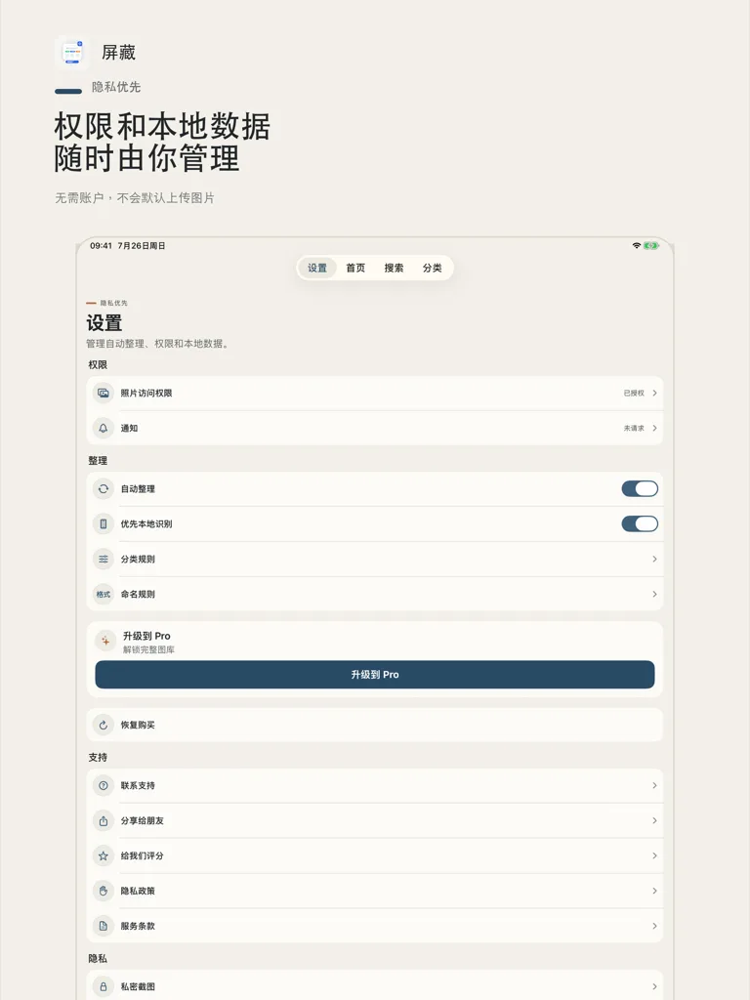

隐私优先 · 截图整理与搜索
Privacy-first · Screenshot organizer & search
把截图变成
可搜索的资料库。
屏藏在设备端识别截图文字，自动生成标题、分类、摘要与标签，让相册里难找的截图随时可查。
Turn screenshots
into a searchable library.
ScreenTrove reads text on your device, auto-generates titles, categories, summaries, and tags — so screenshots are always easy to find.
看看屏藏See ScreenTrove








